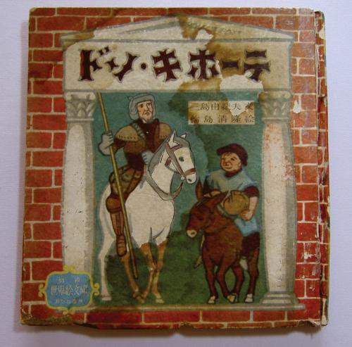
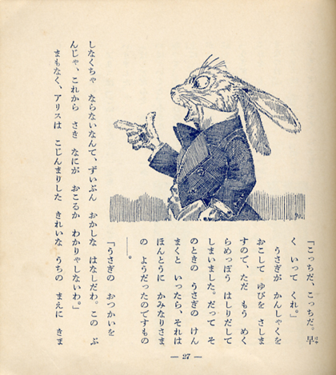

38-летний Мисима в автобиографическом эссе “Время моих странствий” вспоминает о том, как в школьные годы увидел фильм Георга Пабста “Приключения Дон Кихота” с Федором Шаляпиным в главной роли. В 1952 году в Японии была издана книга “Дон Кихот”, где автором значился Юкио Мисима.

“Дон Кихот”, 1952 год
В смутное послевоенное время издательство “Аканэ” выпускало детскую серию “Иллюстрированные произведения мировой литературы”. В ней, помимо прочего, публиковались произведения Ясунари Кавабаты и Юкио Мисимы. Вот только названия у книг были подозрительно знакомые. Например, под фамилией Мисимы помимо “Дон Кихота” были изданы “Сон в летнюю ночь”, “Гамлет” и “Алиса в Стране чудес”.

“Приключения Алисы в Стране чудес”, 1956 год
Конечно, это были переводы или, вернее сказать, переложения. В 1972 году под редакцией жены писателя Юко Хираока вышла полная библиография, где эти четыре произведения значатся как не принадлежащие его перу. Эти книги больше не издаются, и их очень сложно раздобыть. Мисима был их автором примерно настолько, насколько Борис Заходер — автор “Винни-Пуха”. Интересно было бы прочесть такую интерпретацию западной классики, в отзывах пишут, что эти книги очень “в духе Мисимы”, хоть и предназначались для детей. Наверное, эти произведения были близки писателю, ведь и сумасбродную попытку Мисимы совершить государственный переворот японцы нередко называют донкихотством.
Comments !